비서-2급 (2016-11-20 기출문제)
1과목: 비서실무
1. 다음 중 로밍서비스에 대한 정 비서의 설명으로 적절하지 못한 것은?
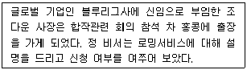
- “자동로밍은 사장님 번호를 그대로 외국에서도 사용할 수 있어서 좋습니다.”
- “자동로밍은 자유롭게 수신하시면 부담이 없으실 겁니다.”
- “자동로밍이 되지 않는 경우 인천공항이나 각 이동통신 회사 서비스 센터에서 언제든지 신청할 수 있어 편리합니다.”
- “자동로밍을 하게 되면 사장님의 단말기를 그대로 이용할 수도 있으니 편하실 겁니다.”
(정답률: 55%)

2. 업무지시를 받은 손비서가 모임 참석여부 및 일정확인을 하는 과정에서 이규태 사장에게는 직접 휴대전화로 연락하라는 상사의 지시를 받았다. 휴대전화로 통화를 진행하는 손비서의 가장 올바른 업무자세는?
- “안녕하십니까, 가나상사 김태호 사장님 비서 손미나입니다. 사장님께서 이틀 후 모임 관련하여 이 사장님께 직접 연락 드리라 말씀하셔서 이렇게 휴대 전화로 연락드리게 되었습
- “안녕하세요, 가나상사 손미나 비서라고 합니다. 저희 사장님께서 모임을 주최하시고자 하는데 사장님께서 참석을 하실 수 있는지 여쭤봐 달라고 하셔서 연락드렸습니다.”
- “안녕하세요, 가나상사 김태호 사장님께서 오찬모임을 계획 중이셔서 이사장님 참석여부를 여쭙고자 합니다. 사장님께서는 참석가능하신지요?”
- “안녕하십니까, 이규태 사장님이십니까? 통화가능하신지요.”
(정답률: 54%)
3. 다음 중 비서가 상사의 지시 없이 할 수 있는 홍보업무와 가장 거리가 먼 것은?
- 상사와 관련된 기사를 정기적으로 검색하여 스크랩하고 보고한다.
- 사내에서 친밀도가 높은 임직원의 기념일을 정리하여 알려 드린다.
- 상사의 외부 강연 활동에 대한 내용을 정리하여 이력서와 함께 관리한다.
- 상사의 개인 블로그를 매일 방문하여 새로운 댓글을 확인하여 알려드린다.
(정답률: 73%)
4. 다음은 홍비서가 알아본 상사의 항공일정이다. 항공일정에 따른 홍비서가 상사에게 보고하는 내용이 올바르지 않은 것은?
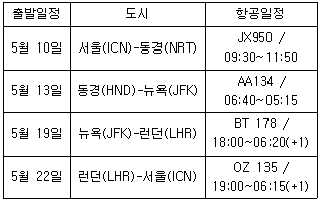
- “5월13일 뉴욕행은 동경 하네다 공항에서 이른 아침에 출발합니다.”
- “뉴욕 도착 일자는 현지 날짜로 5월 13일입니다.”
- “서울에 22일에 도착하시는 대로 차를 대기시켜 놓도록 하겠습니다.”
- “5월 19일 뉴욕 케네디 공항에서 출발하여 런던 도착하시면 호텔 숙박이 2박으로 예약되어 있습니다.”
(정답률: 49%)
5. 다음의 상황에서 비서 이나영의 대응자세로 가장 부적절한 것은?
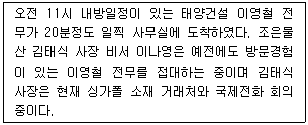
- (자리에서 일어나며 반갑게) “이영철 전무님, 그동안 안녕하셨습니까? 이동하시는데 불편함은 없으셨는지요.”
- “제가 회의실로 안내해 드리겠습니다. 지금 사장님께서는 싱가폴 거래처분과 회의 중이십니다.”
- 전화회의 중인 김태식 사장에게 '사장님, 11시 내방예정이신 태양건설 이영철 전무님께서 사무실 도착, 회의실에 모셨습니다.'라고 적힌 메모를 전한다.
- (회의실에 이영철 전무를 안내하며) “잠시 기다리시는 동안 좋아하시는 따뜻한 녹차를 준비해 드리겠습니다. 혹시 더 필요하신 것은 없으신지요.”
(정답률: 63%)
6. 다음 중 상사 회의 시, 선약되지 않은 김부장 방문 응대요령으로 비서가 대응 한 것 중 가장 적절한 것은?
- “죄송합니다. 사장님께서는 지금 회의 중이십니다.”
- “사장님께서 지금 회의 중인데 이쪽에 앉아서 잠시만 기다려 주시면 만나시도록 해 드리겠습니다.”
- “사장님께서 지금 회의 중입니다. 제가 메모로 김 부장님께서 방문하셨다고 전해드리겠습니다. 이쪽에 앉아서 잠시만 기다려 주세요.”
- “김 부장님, 사장님께서 회의 중이라서 나오시기가 어렵습니다.”
(정답률: 25%)
7. 다음은 김영숙 비서의 업무 태도이다. 이 중 가장 적절한 것은 무엇인가?
- 비서들의 단합과 친목을 위해 사내 비서 모임을 결성하여 1달에 1번 모임을 통해 각자 상사들에 대한 정보를 공유하고 있다.
- 상사인 사장님이 구매부 부서장을 급하게 찾는다. 그래서 김영숙 비서는 부서장에게 전화를 하여 “사장님께서 부서장을 바로 오라는데요.”라고 말씀드렸다.
- 비서로서 다른 이들과 일정한 거리감을 두되 조직에서 어려움을 호소하는 동료들의 고충은 상부에 조언한다.
- 조직 내에서 직원들이 상사에 대해 좋은 이미지를 가질 수 있도록 상사에 대해 좋은 이야기를 가능하면 자주 해 준다.
(정답률: 54%)
8. 차윤희 비서는 5명의 비서가 함께 근무하고 있는 그룹비서실 비서이다. 전 회사에서 함께 일하던 상사의 요청에 따라 함께 부임한 차비서는 기존의 근무하던 비서들의 눈에 보이지 않는 텃세와 문화적인 이질감에 많은 스트레스를 받고 있다. 차 비서의 갈등과 스트레스 관리를 위한 방안으로 가장 적절치 않은 것은?
- 새로운 환경에 적응할 수 있도록 화합의 분위기를 만들어간다.
- 적절한 휴식과 취미계발로 심리적인 스트레스를 완화시킨다.
- 동료들과 협력해서 일할 수 있는 기회를 만든다.
- 자신의 업무에 몰입함으로써 동료관계에 대해 의도적으로 관심을 갖지 않도록 한다.
(정답률: 63%)
9. 다음에서 공통적으로 설명하고 있는 두 가지는?
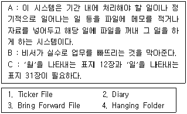
- 1, 3
- 1, 2
- 2, 3
- 3, 4
(정답률: 38%)
10. 비서의 일정관리 소프트웨어 사용법에 대한 설명으로 가장 적절하지 않은 것은?
- 최근에는 일정 관리, 주소록 등이 포함된 그룹웨어 시스템을 갖추고 인트라넷을 통해 개개인이 일정을 입력하고 공유하는 기업이 많아졌다.
- 전자 일정표의 사용이 보편화되어도 아직 종이로 된 전통적인 다이어리를 동시에 이용하는 비서가 많은데 다이어리는 보통 1년 기준으로 되어 있으며 사용 후 버리지 말고 일정 기간 보관하여 참고 자료로 활용 가능하다.
- 일정표는 컴퓨터에 저장해서 보관하고, 필요에 따라 출력한 출력본은 보관하지는 않는다.
- 인트라넷에서 검색한 임직원의 일정표가 정확하다면 비서는 상사가 주최하는 일정을 잡을 때 일일이 전화나 메일을 보내지 않더라도 가능한 일정을 편리하게 찾아볼 수 있다.
(정답률: 74%)
11. 국제영상회의 진행과 관련하여 잘못 설명된 것은?
- 모든 회의참석자들이 영상화면에 보일 수 있도록 테이블 형태 및 배치를 확인할 필요가 있다.
- 타국가와의 영상회의 시 특히 daylight saving time zone에 주의하여 회의시각을 결정하도록 해야 한다.
- 국제영상회의 진행의 경우 전문 기술자의 도움을 받아 진행되므로 비서가 직접 기계를 만지지 않는다.
- 사내 영상회의 시설 미설치 시에는 특급호텔의 비즈니스센터에 마련된 영상회의장을 대여하여 활용할 수도 있다.
(정답률: 56%)
12. 위와 같은 상황에서 오사카 출장을 위해 장 비서가 준비한 것으로 가장 적절한 것은?(12번 공통지문 문제)
- 12월 10일 출발할 상사의 비자를 미리 신청하였다.
- 고액권과 소액권을 섞어서 엔화로 환전하였다.
- 가장 가까운 은행을 이용하여 빠르게 환전하였다.
- 외국 출장을 위해 값이 저렴한 7일 권 해외여행 전화 플랜에 가입하였다.
(정답률: 45%)
13. 김영숙 비서는 2주 후에 상사가 1주일간 미국 뉴욕으로 출장을 가게 되어 출장 업무를 보좌하게 되었다. 김 비서가 수행한 상사 출장업무 보좌로 가장 적절한 것은?
- 출장에서의 일정 및 예산 등을 포함한 출장 계획서를 출장일 3일전에 완성했다.
- 상사 휴대전화 로밍서비스를 데이터 무제한 요금제로 신청했다.
- 출장 중인 상사와 이메일, 전화 등으로 매일 업무 연락을 취해야 하므로 상사 업무 대행자를 별도로 지정하지 않았다.
- 출장전담부서에서 상사 출장과 관련된 모든 업무를 처리하므로 비서는 상사의 개인적인 보좌 업무에만 집중하였다.
(정답률: 72%)
14. 다음 중 글로벌 매너에 대한 설명으로 가장 바르지 못한 것은?
- RSVP는 'Reply, if you please'라는 뜻으로 참석 여부를 연락 바란다는 의미이다.
- 칵테일파티는 도착시간은 개최 시작 시간에 정확히 맞추되 참석자의 사정에 따라 자유롭게 파티장을 떠날 수도 있다.
- 레스토랑에서 식사 중 잠시 자리를 뜰 때에는 냅킨을 접어 식탁 위에 올려놓고 의자 오른쪽으로 일어선 후 조용히 나간다.
- 식사 장소에 도착하면 미리 화장실에 다녀와 식사 도중 자리를 뜨거나 주빈을 혼자 남겨 두는 일이 없도록 하는 것이 좋다.
(정답률: 58%)
15. 다음 중 비서가 수행하는 경조사 업무에 대한 내용으로 가장 적절하지 않은 것은?
- 경조사 업무는 무엇보다 시기가 중요하므로, 비서는 신문의 인물 동정란이나 인물관련기사를 매일 빠짐없이 확인하고 사내 게시판 등에 올라오는 경조사도 확인하고 있다.
- 회사의 경조사 업무는 상사의 재량보다는 관례나 회사의 경조규정에 따라 형식을 갖춘다.
- 상사가 직접 참석하지 못하고 비서가 대리로 참석하여 축의금을 전달하는 경우, 결혼 축의금은 되도록 깨끗한 돈을 준비하여 흰 종이에 싸고 단자(單子)를 써서 봉투에 넣는데 이때 봉투는 봉한다.
- 조문을 하는 절차는 조객록에 서명을 한 후 조의금을 전달하고 호상(護喪)에게 신분을 밝힌 후 조문을 한다.
(정답률: 62%)
16. 다음 중 비서의 상사보좌 업무에 대한 수행방법으로 가장 적절하지 않은 것은?
- 비서는 조간신문과 간행물을 상사의 선호도에 따라 정리하여 보시는 곳에 놓아두고 서류와 우편물을 시간 순으로 분류하여 정리한다.
- 비서는 중요한 모임의 초청장과 행사 안내장의 날짜에 형광펜으로 표시하여 올려 드린다.
- 공휴일 다음 날이나 상사가 출장에서 귀국한 직후는 평소 출근 시간보다 조금 더 일찍 출근하여 업무를 시작하도록 한다. 특히, 해외 출장의 경우 시차가 회복되지 않아 일찍 출근하시면 피로가 쌓여 있을 수 있으므로 더욱 긴장한 자세로 업무에 임한다.
- 중요한 우편물의 경우 서류와 함께 올려 드리고, 급하지 않은 것은 오후에 업무가 바쁘지 않은 시간에 드리도록 한다.
(정답률: 26%)
17. 상사의 기본 인적 사항에 관련된 개인 정보를 신상 카드에 작성하고 관리해야 할 뿐만 아니라, 상사의 회사 업무에 관련된 정보를 작성하고 변경 사항이 생길 때마다 수정하여 최신의 상태로 관리해야한다. 다음 중 비서의 상사 보좌 업무수행 시 가장 올바른 태도는 무엇인가?
- 비서는 상사의 인적 사항에 대한 모든 내용을 상사의 개인 파일에 정리해 두되 암호는 사용하지 않는다.
- 상사의 개인적인 신상에 관한 정보는 상사로부터 구두나 문서를 통해 파악한 정보를 즉시 기록해 두되, 필요한 경우 미리 질문지를 작성해 상사의 업무에 방해되지 않는 시간에 요청하여 정보를 습득할 수도 있다.
- 비서는 상사가 일 년에 한 번씩 정기적으로 건강 검진을 놓치지 않고 받을 수 있도록 예약 및 관련 업무를 수행하나, 개인적이고 특별한 지병이나 알레르기 등의 문제는 관여하지 않는 것이 좋다.
- 상사의 이력에 관한 사항은 비서가 업무를 하는 데 있어 참고할 뿐만 아니라 대내·외적인 필요에 의해 공개하거나 제출할 경우가 있다. 이런 경우 비서는 상사의 이력서 내용 중에서 외부에 공개할 내용을 비서가 판단하여 선별·제공할 수 있다.
(정답률: 63%)
18. 다음의 상황에서 장비서의 업무처리방식으로 가장 적절하지 않은 것은?
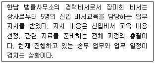
- 현재 진행하고 있는 송무업무가 완료되지 않았기 때문에 그 업무를 완료한 후, 상사가 지시한 업무를 수행할 계획임을 선임비서에게 보고하고 상사의 양해를 구해 달라고 한다.
- 지시받은 신입 비서교육 업무는 계획부터 실행까지 시간이 걸리는 일이라 중간에 업무 진행 상황에 대한 중간보고를 드린다.
- 두 가지 업무를 동시에 진행하기가 도저히 불가능하다고 판단되어 상사에게 중간보고 시 선임 비서들이 팀을 이루어 같이 진행하면 좋겠다는 건의를 드린다.
- 신입 비서교육과 관련된 전문가의 인터넷 강의를 들으면서 필요한 정보를 얻으면서 새로운 업무에 대한 자신감을 쌓기 위해 노력한다.
(정답률: 52%)
19. 상사는 공항으로 오후 3시에 도착하는 외국손님을 마중가기로 되어 있는데, 2시 현재 상사는 회의실에서 영업팀과 회의 중이다. 회의가 계속되고 있는 경우, 비서의 행동으로 가장 바람직한 것은? (참고로 회사에서 공항까지는 약 50분 정도의 시간이 소요된다.)
- “사장님, 공항으로 출발하실 시간입니다.”라고 메모하여 상사에게 직접 전달한다.
- “사장님, 공항으로 출발하실 시간이시니 회의를 끝내셔야 할 것 같습니다.”라고 메모를 적어 영업팀장에게 전달한다.
- 회의실 문을 노크하고 들어가 상사에게 귓속말로 알린다.
- 상사에게 “사장님, 오후 3시 외국손님 마중가실 시간입니다.”라고 휴대폰으로 문자를 보내고 회의가 끝나길 기다린다.
(정답률: 70%)
2과목: 경영일반
20. 다음 중 기업의 경영활동에 직접적인 영향을 미치는 산업의 경쟁구조에 대한 설명으로 가장 옳지 않은 것은?
- 산업성장률이 높을 때 산업성장률이 낮은 경우보다 그 산업의 경쟁이 치열해진다.
- 진입장벽이 낮은 산업일수록 경쟁이 치열해진다.
- 제품차별화 정도가 낮은 산업일수록 경쟁자 위협의 수준이 높다.
- 기존의 경쟁기업 수가 많거나 대체재의 수가 많을수록 경쟁은 치열해진다.
(정답률: 49%)
21. 다음은 경영환경을 분류한 것이다. 이 중 환경의 종류가 다른 한 가지는 무엇인가?
- 소비자
- 경쟁자
- 조직문화
- 지역사회
(정답률: 45%)
22. 다음 중 기업이 사회적으로 수행해야 할 책임에 대한 설명으로 가장 적절하지 않은 것은?
- 외부불경제를 발생시키는 기업이나 경영자에 대해 사회적 책임이 요구된다.
- 기업의 거대화로 기업의 영향력이 커지면서 사회 구성원의 이익과 일치하지 않는 경우 해당 기업에 대한 사회적 책임이 요구된다.
- 기업은 지역사회에 대한 고용창출이나 문화적 투자와 같은 사회적 책임을 갖는다.
- 기업의 종업원에 대한 사회적 책임은 종업원의 노동력 제공에 대한 물질적 보상만을 의미한다.
(정답률: 72%)
23. 다음 중 무한책임사원만으로 구성된 상법상의 기업형태는 무엇인가?
- 합명회사
- 합자회사
- 주식회사
- 유한회사
(정답률: 57%)
24. 다음 중 주식회사에 대한 설명으로 가장 적절하지 않은 것은?
- 주식회사는 자본조달의 확대가 가능하고 소유권 이전이 용이하다는 장점이 있다.
- 주식회사는 무한책임제, 자본증권화, 소유와 경영의 분리를 특징으로 한다.
- 주식회사는 투자자가 있지만 그들과는 별개의 법적 지위를 갖는 법인이다.
- 주식회사는 손익계산과 자본상태에 관한 정보를 주주뿐만 아니라 일반인에게도 알려야 한다.
(정답률: 38%)
25. 다음 중 중소기업 및 대기업의 특징에 대한 설명으로 가장 적절하지 않은 것은?
- 중소기업은 분업화, 전문화, 자본조달의 용이, 높은 대외적 신용도 등이 특징이다.
- 자본주의가 발달함에 따라 기업의 규모가 커지는 경향이 있다.
- 자본의 규모에 따라 중소기업과 대기업이 나뉠 수 있다.
- 중소기업은 기준이 나라마다, 업종마다 다를 수 있는데 비교적 상대적인 의미로 구분된다.
(정답률: 60%)
26. 다음 중 조직구조의 분류 형태인 기계적 조직과 유기적 조직에 대한 설명으로 가장 적절하지 않은 것은?
- 기계적 조직은 직무의 분업화나 직무수행의 표준화 등과 같은 합리성이 강조된다.
- 유기적 조직은 효율성을 강조하며 공식화와 전문화의 정도가 높게 나타난다.
- 기계적 조직은 과업이 일상적이므로 안정적이고 단순한 환경에 적합하다.
- 유기적 조직은 부서 간 자유로운 이동과 참여가 가능하며 종업원간의 비공식적 의사소통이 원활히 이루어진다.
(정답률: 37%)
27. 다음 중 전문경영자와 소유경영자에 관한 설명으로 가장 옳지 않은 것은?
- 소유경영자는 강력한 리더십을 발휘할 수 있는 장점이 있다.
- 전문경영자는 과감한 경영혁신과 환경변화에 빠르게 대응할 수 있는 장점이 있다.
- 전문경영자는 소유경영자에 비해 단기적 이익에 집착하는 경향이 강하다.
- 소유경영자는 전문경영자에 비해 족벌경영의 위험이 더 높다.
(정답률: 13%)
28. 다음 중 조직문화와 관련된 설명으로 가장 옳지 않은 것은?
- 조직문화는 구성원에게 정체성을 제공하고 집단적 몰입과 조직체계 안정성을 높인다.
- 엄격하고 강압적인 조직문화는 항상 조직의 성과를 높인다.
- 조직문화는 조직내부의 관리스타일, 조직구조, 구성원, 공유가치 등에 영향을 받는다.
- 신입사원이 조직사회화를 통해 조직에 존재하는 다양한 가치와 규범, 행동양식에 대해 습득하는 것은 소속된 조직의 조직문화를 배워가는 과정이다.
(정답률: 79%)
29. 다음의 괄호에 들어갈 말로 가장 적절한 것은?
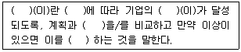
- 경영계획 - 계획 - 목표 - 실적 - 수정
- 경영통제 - 계획 - 목표 - 성과 - 수정
- 경영계획 - 계획 - 목적 - 실적 - 수정
- 경영통제 - 계획 - 목적 - 실적 - 제거
(정답률: 36%)
30. 다음 중 매슬로우의 욕구계층이론과 허즈버그의 2요인이론에 대한 설명으로 가장 적절하지 않은 것은?
- 매슬로우의 5단계 욕구 중에서 생리적 욕구는 사람의 가장 기초적인 욕구이다.
- 허즈버그는 불만요인을 충족시켜주더라도 동기를 유발하는 데는 유효하지 않다고 하였다.
- 매슬로우는 인간의 욕구는 5단계의 계층을 이루고 있으며, 생리적 욕구 → 안전의 욕구 → 사회적 욕구 → 존경의 욕구 → 자기실현의 욕구 순으로 욕구의 강도가 낮아진다고 하였다.
- 허즈버그의 만족요인은 지위, 개인상호 간의 관계, 개인적 생활 등이 해당된다.
(정답률: 29%)
31. 다음 중 기업문화 형성단계에서 비교적 가장 크게 영향을 미치는 요인은?
- 창업자의 경영이념
- 사원의식
- 행동강령
- 슬로건
(정답률: 64%)
32. 성과에 비례하여 임금을 차등화하는 임금체계는 다음 중 무엇인가?
- 업적급
- 직무급
- 성과급
- 연공급
(정답률: 66%)
33. 다음 중 직무관리에 대한 설명으로 가장 적절하지 않은 것은?
- 직무평가는 직무의 상대적 가치를 분석·비교하는 평가과정이다.
- 직무순환은 종업원을 동기부여하기에 유용하지만 훈련비용이 많이 들고 생산성을 저하시킬 수 있다.
- 직무확대는 한 직무에서 수행되는 작업의 수를 증가시켜 직무를 수평적으로 확대하는 방법이다.
- 직무충실화는 직무내용과 직무의 질을 낮추는 것을 의미한다.
(정답률: 71%)
34. 다음 중 소비자 만족의 극대화를 목표로 하는 마케팅믹스인 4P에 가장 해당되지 않는 것은?
- 제품
- 물류
- 가격
- 유통
(정답률: 53%)
35. 다음 중 재무상태표의 왼쪽 차변에 기재하는 내용으로 가장 적절하지 않은 것은?
- 현금
- 장기대여금
- 자본
- 건물
(정답률: 49%)
36. 균형성과표(BSC)의 4가지 성과측정관점으로 가장 옳지 않은
- 재무적관점
- 경영자관점
- 내부프로세스관점
- 학습과성장관점
(정답률: 33%)
37. 다음 중 회사채의 종류에 대한 설명으로 가장 적절하지 않은 것은?
- 보증사채는 사채의 원금상환 및 이자지급을 금융기관이 보증하는 사채를 말한다.
- 전환사채는 일정조건에서 주식으로 전환될 수 있는 사채를 말한다.
- 신주인수권부사채는 신주발행 시에 주식을 받을 수 있는 사채를 말한다.
- 보증사채는 사채의 원금상환, 이자지급, 이익배당 참가를 발행회사만이 할 수 있어서 보증이 필요 없는 사채를 말한다.
(정답률: 53%)
38. 다음 중 조직구조의 유형에 대한 설명으로 가장 적절하지 않은 것은?
- 매트릭스 조직구조는 단일 명령계통 체계를 갖고 있어서 환경변화에 유연하게 대처하기 어렵다.
- 사업부별 조직구조는 책임경영체제 확립과 신속한 의사 결정이 가능하지만 사업부별 자원의 낭비를 가져올 수 있다.
- 위원회 조직은 부문 간의 협조와 조정을 위해 기존의 조직 구조에 부속되어 보조하는 조직구조로 활용된다.
- 혼합형 조직구조는 기능조직과 사업부별 조직구조를 혼합한 형태로 조직목표와 사업부 목표의 통합이 가능하다는 장점이 있다.
(정답률: 52%)
39. 다음 중 인적자원관리의 주요활동내용에 대한 설명으로 가장 적절하지 않은 것은?
- 인적자원관리는 조직원의 모집 및 선발에서 퇴사에 이르는 전 과정을 관리하는 것을 말한다.
- 인력수요를 예측하기 위해서는 직무분석 기법을 활용하는데, 직무분석을 위해서는 직무기술서와 직무명세서를 활용할 수 있다.
- 조직원의 평가와 관련된 임금 결정은 연공서열, 성과, 직무 특성, 직무자격 등의 기준을 바탕으로 결정된다.
- 유지관리란 회사를 나가는 사람들을 관리하는 것을 말하며, 퇴직관리란 조직원들이 이직하지 않고 계속 열심히 일하도록 만드는 것을 말한다.
(정답률: 59%)
3과목: 사무영어
40. Choose one which does not match each other.
- Corp. - Corporation
- Hq. - headquarters
- pp. - page
- M. C. - Master of Ceremonies
(정답률: 53%)
41. Choose the correct department abbreviation of a business organization which has the most close relation with the given words below.
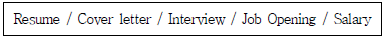
- PR
- HR
- R&D
- GA
(정답률: 43%)
42. Which of the followings is not an appropriate explanation for the underlined word?
- traveller's check : a company's records of its employees' salaries and wages, bonuses, and withheld taxes
- visa : an official document, or a stamp put in your passport, which allows you to enter or leave a particular country.
- stopover : to stop somewhere for a short time when you are on a long journey, especially a journey by plane
- rain check : to make an arrangement to do a said activity at another time
(정답률: 23%)
43. 다음 빈칸 ⓐ, ⓑ에 들어갈 단어로 가장 적절한 것은?
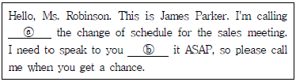
- regarding, to
- regarding, about
- regards, on
- regards, about
(정답률: 33%)
44. 다음 영문서의 내용을 가장 잘 설명한 것은?
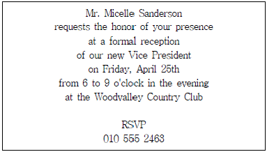
- rejecting to invitation
- requesting a presentation
- making a reservation
- inviting to reception
(정답률: 35%)
45. Which of the followings is the best arrangement of a business letter?
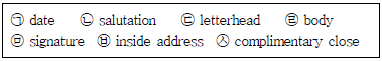
- ㉠, ㉥, ㉡, ㉣, ㉤, ㉦, ㉢
- ㉠, ㉥, ㉢, ㉡, ㉣, ㉦, ㉤
- ㉢, ㉠, ㉥, ㉡, ㉣, ㉦, ㉤
- ㉢, ㉠, ㉡, ㉥, ㉣, ㉤, ㉦
(정답률: 35%)
46. Choose one which is translated into English properly.
- Will you transport this call to Mr. Kim?
- Will you transfer this call to Mr. Kim?
- Will you assign this call to Mr. Kim?
- Will you turn this call to Mr. Kim?
(정답률: 34%)
47. Which of the followings is the most appropriate order?
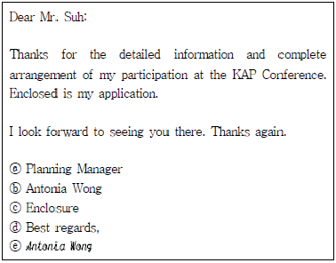
- ⓓ - ⓔ - ⓑ - ⓐ - ⓒ
- ⓑ - ⓔ - ⓓ - ⓒ - ⓐ
- ⓒ - ⓓ - ⓔ - ⓑ - ⓐ
- ⓓ - ⓐ - ⓔ - ⓒ - ⓑ
(정답률: 37%)
48. What is the purpose of the following passage?
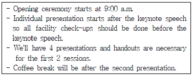
- To inform
- To complain
- To register
- To inquire
(정답률: 37%)
49. 다음 이메일의 목적을 가장 잘 설명한 것은?
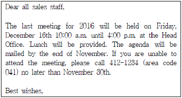
- To cancel the reservation
- To notify the year-end sales meeting
- To rearrange the 2016 last meeting
- To remind sales people of the change of schedule
(정답률: 40%)
50. Which of the following sentences is not correct?
- It's on the left of Mr. Taylor's office.
- It's at the end of the corridor.
- Take the elevator on your right to the 21th floor.
- It's opposite the Sales Department.
(정답률: 38%)
51. What is not true to the conversation below?
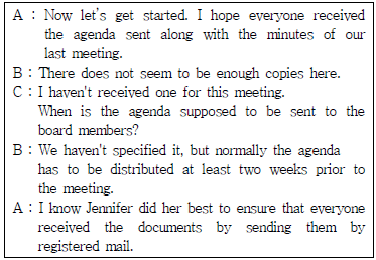
- Not everyone of the members received the agenda in advance.
- Jennifer will distribute the agenda at the meeting.
- The members are normally supposed to receive the agenda two weeks before the meeting.
- Registered mail service was used to send the documents to the members.
(정답률: 28%)
52. Choose one which is the most appropriate for the blank.
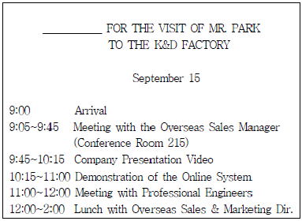
- LETTER OF CREDIT
- BROCHURE
- CONTENTS
- ITINERARY
(정답률: 50%)
53. Which of the followings is not appropriate for the blanks?
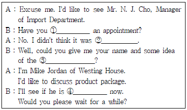
- made
- necessary
- nature of your business
- availability
(정답률: 38%)
54. Which of the followings is the most appropriate expression for the blank ⓐ, ⓑ, and ⓒ?
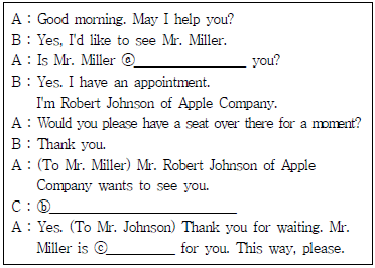
- ⓐ expecting, ⓑ Please show him in., ⓒ waiting
- ⓐ waiting, ⓑ Go right in, please., ⓒ looking
- ⓐ staying, ⓑ I don't want to be interrupted now., ⓒ finding
- ⓐ seeing ⓑ Please send in him., ⓒ looking
(정답률: 47%)
55. Choose the most appropriate expression for the blank.
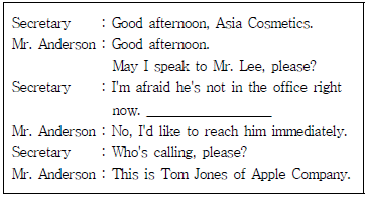
- Can I get you through?
- Could you say that again slowly?
- Hang up the phone, please.
- Could you leave a message?
(정답률: 55%)
56. Which of the followings is the most appropriate for the blank?
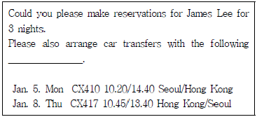
- deposit
- promotion rate
- hotel reservation
- flight details
(정답률: 42%)
57. Read the following conversation and choose one which is true.
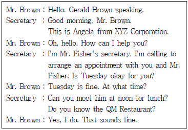
- Mr. Brown is available on Tuesday for lunch.
- The secretary will reserve three tables for her boss.
- The secretary should send a map of QM Restaurant to Mr. Brown.
- Angela wants to meet Mr. Brown to discuss the project.
(정답률: 50%)
58. Read the following letter and choose one which is true.
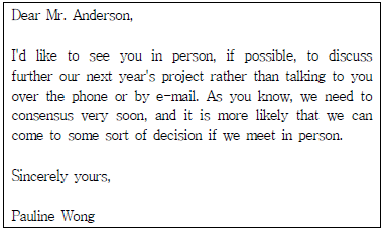
- Ms. Wong wants to discuss the upcoming project over the phone.
- Ms. Wong wants to meet the deadline for the project.
- Ms. Wong wants to meet Mr. Anderson in person.
- Ms. Wong wants to inform Mr. Anderson of their meeting schedule.
(정답률: 43%)
59. 다음 이메일의 설명에서 사실과 다른 것은?
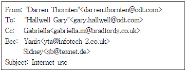
- 이 이메일을 받는 사람은 모두 4명이다.
- Darren Thornten이 보내는 이메일이다.
- Sidney는 Gabriella가 이 이메일을 받은 사실을 모른다.
- Hallwell Gary는 Yanis가 이 이메일을 받은 사실을 모른다.
(정답률: 53%)
4과목: 사무정보관리
60. 문서의 윗부분에 기재된 회사의 로고, 회사명, 주소, 연락처 등이 들어있는 부분을 무엇이라고 하는가?
- 템플릿(template)
- 뉴스레터(newsletter)
- 레터헤드(letterhead)
- 헤드라인(headline)
(정답률: 59%)
61. 다음은 문서의 성립과 효력 발생 시기에 관한 설명이다. 이 중 가장 올바르지 않은 것은?
- 우리나라는 문서효력 발생 시기를 정하는 원칙으로 표백주의를 채택하고 있다.
- 수신자에게 문서가 도착할 때 효력을 발생하므로 분쟁의 소지가 있는 문서는 수령증을 받아둔다.
- 공고문서의 경우는 공시 또는 공고가 있은 후 5일이 경과한 날로부터 효력을 발생한다.
- 문서의 성립 시기는 특별한 규정이 없는 한, 최종결재권자의 서명에 의한 결재가 완료되면 성립한다.
(정답률: 43%)
62. 다음 중 기안문서의 “끝”표시가 가장 옳지 않은 것은?
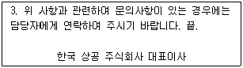
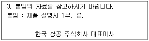
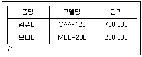
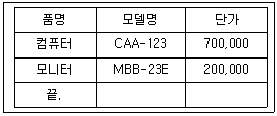
(정답률: 61%)
63. 다음 중 문서관리의 목적과 가장 거리가 먼 것은?
- 문서 색출 시간 절약
- 문서 보관 공간 절약
- 사무환경 개선
- 의사 전달의 간소화
(정답률: 42%)
64. 다음 감사장 작성에 관련한 사례 중 가장 올바르지 않은 것은?
- 황비서는 취임축하에 대한 감사장 작성 시, 축하에 대한 감사의 글로 시작한 후, 마지막은 상대방의 지원을 부탁하는 글로 끝맺었다.
- 강비서는 감사의 뜻을 전하기 위하여 겸손하고 정중하면서도 서식에 맞추어서 작성하였다.
- 채비서는 편지병합으로 개인별 축의금액을 언급하면서 감사장을 작성하여 개개인에 대해 관심을 보였다.
- 유비서는 창립기념축하연 참가자에 대한 감사장을 작성하면서 진행상 미숙으로 인한 불편함을 초래한 것에 대해서 사과의 말도 함께 기재하였다.
(정답률: 68%)
65. 김 비서는 문서 담당부서에서 접수문서를 전달받았다. 하지만 내용을 읽어보고 비서실이 아닌 기획부 업무인 것을 알고 접수 받은 문서를 기획부로 전달했다. 이러한 경우 문서의 처리단계에 따른 올바른 문서 명칭은 무엇인가?
- 공람문서
- 이첩문서
- 폐기문서
- 시행문서
(정답률: 60%)
66. 문서의 회람에 대한 설명 중 가장 적절한 것은?
- 회의결과를 작성된 서식에 기록하는 것이다.
- 회람을 할 때는 원본으로 한다.
- 한 장소에 모여 의견을 나누고 그 실시사항을 결정하는 경우에 활용한다.
- 다수가 보아야 하는 사안인 경우 각자가 문서를 열람하였다는 확인을 할 수 있도록 한다.
(정답률: 50%)
67. 다음 중 이름(회사명)으로 문서를 관리하는 명칭별 분류법의 특징에 대한 설명으로 가장 적절하지 않은 것은?
- 무한하게 확장이 가능하다는 장점이 있다.
- 동일한 개인(회사)에 관한 문서가 한 곳에 집중된다.
- 직접적인 정리와 참조가 가능하다.
- 색인이 불필요하다.
(정답률: 34%)
68. 다음 중 전자결재시스템의 특징에 대한 설명으로 가장 옳지 않은 것은?
- 문서작성 양식을 단순화시킨다.
- 문서 유통 과정을 표준화시킨다.
- 문서작성 실명제가 시행된다.
- 문서 사무처리 절차가 복잡해진다.
(정답률: 59%)
69. 디지털 정보를 저장하는 광디스크로, 제작 시 최초 1회만 기록할 수 있고 그 후로는 읽기만 가능하며 주로 음악, 게임, 소프트 웨어 등을 담아 판매할 때 주로 사용되는 것은?
- CD-ROM
- USB메모리
- CD-RW
- LP(Long Play Record)
(정답률: 52%)
70. 다음 중 김비서의 이메일 사용 방법이 가장 적절하지 않은 것은?
- 거래처에 이메일을 보낸 후 수신 확인 전화를 했다.
- 수신인과 참조인은 구분하여 표시했다.
- 답신 표기의 경우 제목의 'Re'는 무조건 지우고 새로운 제목을 작성한다.
- 붙임 파일을 함께 발송할 경우 메일 내용에 적절한 파일명으로 저장한다.
(정답률: 57%)
71. 다음 설명에 올바른 용어가 순서대로 짝지어진 것은?
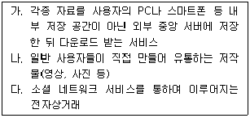
- 클라우드 서비스 - UCC - SNS
- 유비쿼터스 - DMB - SNS
- 클라우드 서비스 - UCC - 소셜 커머스
- 유비쿼터스 - SNS - 소셜 커머스
(정답률: 44%)
72. 컴퓨터에서 LAN카드를 활용하여 인터넷에 연결하기 위해서는 사용자의 네트워크 환경에 적합하도록 TCP/IP 프로토콜을 설정해야 한다. 일반적인 운영체제에서 TCP/IP를 설정할 때 입력해야 하는 기본 정보로 가장 거리가 먼 것은?
- IP 주소
- 서브넷 마스크
- 기본 게이트웨이
- MAC 주소
(정답률: 43%)
73. 프레젠테이션을 잘 하기 위해 양비서가 시도하는 방법으로 가장 적절하지 않은 것은?
- 청중 모두에게 골고루 아이컨텍을 시도한다.
- 긍정적인 말투로 강약 고저 없이 일정한 톤으로 발표한다.
- 미리 발표연습을 해보고 피드백을 받아본다.
- 이야기를 만들어 전달하고, 후에 요약을 한다.
(정답률: 46%)
74. 다음 중 전산회계 프로그램끼리 올바르게 짝지어진 것은?
- 오라클 – KcLep
- CAMP - KcLep
- 더존 s Plus – Mysql
- 오라클 - Mysql
(정답률: 42%)
75. 다음 기사를 읽고 유추할 수 있는 내용으로 가장 적절하지 않은 것은?
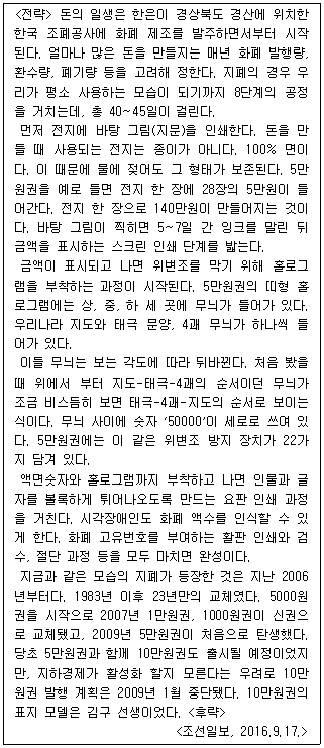
- 돈의 제작공정은 바탕그림인쇄 → 잉크건조 → 금액인쇄 → 홀로그램부착 → 요판인쇄 → 활판인쇄 → 검수 → 절단의 8단계를 거친다.
- 종이화폐라는 의미인 지폐는 종이로 만들어지지 않는다.
- 전지 한 장의 가격은 140만원이다.
- 김구선생을 모델로 하는 10만원권은 발행되지 않았다.
(정답률: 44%)
76. 기밀정보를 다루는 김비서의 행동으로 가장 적절하지 않은 것은?
- 외부요청이 있을 경우 평소 상사가 선호하는 방식으로 처리한다.
- 컴퓨터 정보는 외장하드에 분기별로 백업하였다.
- 비서의 컴퓨터는 비밀번호를 설정하여 두었다.
- 팩스나 복사기 사용 후 문서를 빠뜨리지 않고 챙긴다.
(정답률: 50%)
77. 무선공유기에서 제공하는 보안기술에 해당하지 않는 것은?
- WEP
- WPA
- WPW
- WPA2
(정답률: 42%)
78. 다음 정보보안에 관련한 박비서의 행동 중 가장 잘못된 것은?
- 외장하드 1TB를 구매하여 상사 컴퓨터의 파일을 반기별로 백업했다.
- 외부에서 상사를 찾는 전화가 와서 “사장님은 지금 경영자 모임에 참석하셔서 바로 퇴근하실 예정입니다”라고 응답 했다.
- 상사의 외출이나 부재 시에는 상사의 집무실을 잠가 놓아 아무도 못 들어가도록 조치했다.
- 상사의 노트북에 노트북 보안필름을 붙여 측면에서 화면을 볼 경우 화면내용이 잘 보이지 않도록 조치했다.
(정답률: 61%)
79. 다음 중 공문서 작성요령에 대한 설명으로 가장 옳지 않은 것은?
- 공문서는 두문, 본문, 결문으로 구성되어 있다.
- 공문서의 발신기관명은 글자로만 표시하고 기관의 로고, 상징, 마크 등을 표시하지 않는다.
- 수신기관이 여럿인 경우는 '수신'란에 '수신자 참조'라고 기재하고, 결문의 발신명의 다음 줄에 '수신자' 란을 만들어 수신자 기호 또는 수신자명을 표시한다.
- 경유 기관은 수신기관에 앞서 중간에 거쳐 가는 기관이다.
(정답률: 60%)